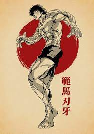

Sobre
Baki the Grappler ou Grappler Baki é uma série de anime e manga de Keisuke Itagaki. Foi originalmente publicada na Weekly Shōnen Champion de 1991 ate 1999, em 42 volumes. Seguida de duas sequências New Grappler Baki e Baki: Son of Ogre
- Doido
- Maluco brabo
- Forte pa porra
contato
- Whats app: Ele não tem
- Email: Não sabe nem oque é isso
- Endereço: Mansao maromba
OBS: Ee só responde na base da porrada e do desafio